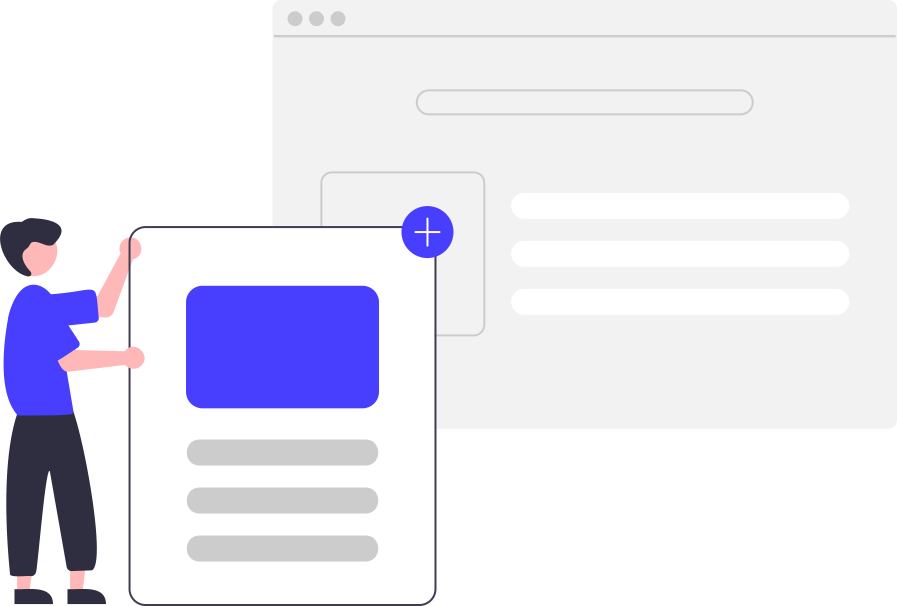

Blogs
In this blog, we'll tlak about how actually promises work in JS.
How to create, consume and chain promises.
In this blog, I talked about how useState() hook works and how to manage state using this hook.
Read BlogIn this blog, we'll tlak about how actually promises work in JS.
How to create, consume and chain promises.
In this blog, I talked about how useState() hook works and how to manage state using this hook.
Read Blog